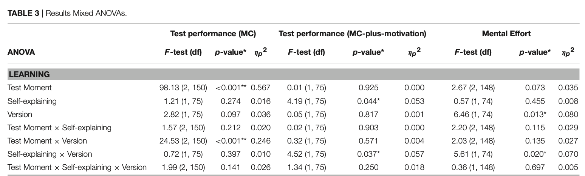
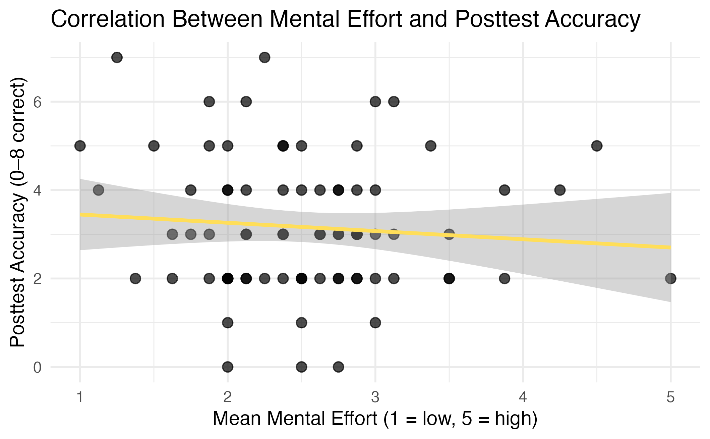

Replication of Effects of Self-Explaining on Learning and Transfer of Critical Thinking Skills X by Van Peppen et al. (2018, November)
Author
Van Peppen, L. M., Verkoeijen, P. P., Heijltjes, A. E., Janssen, E. M., Koopmans, D., & Van Gog, T.
Published
December 9, 2025
Introduction
Despite the growing access to information, students are struggling to develop critical thinking skills needed to evaluate evidence, analyze patterns, and create well-informed judgments (APA citation on definition). One may argue prior knowledge moderates critical thinking. Bao et al. (2022) explores this dynamic, recruiting both U.S. and Chinese students to learn about a scientific concept. After completing the intervention, participants were assessed on their understanding of the content and how well they applied their understanding to novel scenarios. Though both conditions scored higher on scientific content knowledge, scientific reasoning skills remained the same. Bao et al. (2022) exemplifies how prior knowledge alone has minimal impact in developing critical thinking skills. Numerous studies validate this assertion, finding that college students’ underperform in critical thinking and remain stagnant throughout undergraduate years (Billings and Roberts, 2014; Flores et al., 2012; Arum and Roska, 2011; Koehler et al, 2002; Rachlinski, 2004). Furthermore, this may indicate that critical thinking may depend more on how students study rather than how much content they know.
One promising study strategy the authors investigate to increase critical thinking skills is self-explanation. Self-explanations involve analyzing a problem and articulating one’s own reasoning to the solution. Research asserts how self-explanations are influential in helping students organize knowledge, promote analytical thinking, identify gaps in knowledge, and problem-solve creatively (Lombrozo, 2006; Dunlosky et al., 2013; Wylie and Chi, 2014; Fiorella and Mayer, 2016). With these benefits, Van Peppen et al. (2018) aims to understand whether self-explanations improve critical thinking skills. They predict that self-explanations will improve critical thinking and reduce the mental effort required to problem solve.
Methods
Power Analysis
A power analysis was calculated, in which the study computed that 80 participants would be sufficient for the study. They computed the power analysis using a 3 X 2 X 2 mixed ANOVA model, with alpha of 0.05 and correlation of 0.3, and sample size of N=80. They found that this sample size would be sufficient for picking up medium sized effects.
Planned Sample
80 UC San Diego psychology undergraduate students will be recruited for this replication project. Participants will be recruited through Sona. Participants are awarded 0.25 points of extra credit for completing the study.
Materials
The materials for both the replication and original study are the same. For both the pretest and posttest, participants will be administered the critical thinking (CT) skills test. The CT-skills test tried to measure critical thinking skills in two key categories. The first category was to understand how well people were able to logically reason. To test this, they implemented two exams that measured how susceptible participants are to believe in false information (Syllogistic Reasoning task) as well as how likely participants verify versus disprove claims (Wason Selection task). The second category the study aimed to assess was participants’ statistical reasoning skills. The first test they used was the Base-rate tasks to evaluate whether people prioritized anecdotal evidence over statistical findings. Additionally, they integrated the Conjunction tasks which measured how likely people bias statistics: such as believing events described in detail are more probable than a simplistic recount.
For the intervention phase, the study provided CT-instructions that educated participants on what inductive versus deductive reasoning is. Additionally, the instructions integrated two worked examples per exam they were administered in the pretest. Then, participants practiced the learned skills with CT-practice material that allowed participants to apply their skills to four different scenarios, and explain why they came to their conclusions. With each test administered, participants were given a mental effort survey where they rated on a 9-point Likert scale (1 being extremely low effort to 9 being extremely high effort) on how much cognitive effort it took to complete the task.
Procedure
Original Study: Once completing a consent form, participants completed the pretest that measured their initial critical thinking skills through Sona-systems. Afterwards, they were given a paper packet of the CT-instruction, moving them to the intervention phase that taught participants different types of reasoning skills. Then, participants integrated what they learned by solving four practice problems by engaging in self-explanation. Once they completed the practice intervention, participants completed the immediate posttest. Two weeks later, participants were given a delayed posttest that involved the same questions as the immediate version. However, they were also tasked to rate how much mental effort was exerted in completing the questions.
Replication Study: The study procedures follow the original study. The only difference is that the study was conducted online, so participants had to complete an online consent agreement by clicking ‘I agree’. Afterwards, they completed the same eight critical thinking skill pretest questions followed my mental effort ratings. Instead of being given a paper packet, participants virtually read the critical thinking skills for 2 minutes. Afterwards, they completed either three self-explanation exercises or read through them. Then, they completed the posttest before being awarded Sona credits for their completion.
Analysis Plan
We will use a 2 X 2 mixed ANOVA to analyze our results between prior knowledge (pretest vs posttest) as the within-subjects factor and instructional condition (self-explanation versus no self-explanation) as the between-subjects variable. We hope to assess whether critical thinking performance is improved by integrating self-explanation combined with instructional guidance or not. For all analyses in this paper, a p-value of 0.05 was used as a threshold for statistical signficance. Partial eta-squared is reported as a measure of effect size for the ANOVAs, for which 0,01 is considered small, 0.06 medium, and 0.14 large, and Cohen’s d is reported for the post-hoc tests, with values of 0.2, 0.5, and 0.8 representing a small, medium, and large effect size respectively (Cohen, 1988).
Differences from Original Study
Compared to the original study, the replication project employed a 2 X 2 mixed ANOVA analysis. Originally, the study tries to measure three different factors: timing, condition, and critical thinking test type. Due to the constrained timeline of the project, comparing how participants improved on the different critical thinking skills were not analyzed. Rather, we analyzed the main effect between self-explanation and timing. Additionally, this replication study did not include the delayed posttest. Beyond timing constraints, we felt that comparing immediate posttest alone could still reveal interesting findings of the role self-explanation has on critical thinking. Therefore, the replication study only measures the immediate posttest condition.
Another key difference is that the study was launched online rather than the classroom. This would open several confounds, such as variability in concentration and distractions. To mitigate these risks, the replication study implemented an attention check to ensure that participants were paying attention. If they failed, their data would not be included for analysis and scoring. Finally, the original study was in Dutch while this current study is in English. Materials were recruited under the authors’ OSF repository that included the pretest, practice materials, and posttest. The replication study used Google translate to create the materials, and did not make any edits towards the wording to ensure that minimal context is lost. Through these efforts, the hope is to mitigate as much differences from the original to replicate the study.
Reliability & Validity
The original study scores reliability through recruiting two raters to score the data. Since interrater reliability was high, two raters only scored 25% of the tests (r=0.899) and one rater scored the rest of the CT skills tests. Beyond reliability, the study fails to have ecologically validity, as Vanpeppen and colleagues (2018) admit that the study may be difficult to translate into classroom environments. To elaborate, the study could not find any meaningful effects on how self-explanations benefit unbiased reasoning skills. This is due to how those who attend class are more likely to be motivated to do well on tasks, which make the perceived difficulty of the task less effective. For the purpose of time, the replication project only measured the accuracy scores between pretest and posttest and did not include data analysis on the length and quality of the self-explanations.
Methods Addendum (Post Data Collection)
In the methods addendum, the actual sample recruited as well as differences from pre-data collection methods plan are outlined.
Actual Sample
The study recruited 137 participants, but 40 people were taken out of the data due to technical issues or partially reported data. In the replication project, this will not be an issue as there is no delayed posttest. Therefore, the data of 80 participants were analyzed.
Differences from pre-data collection methods plan
In total, we collected 137 participants. We over-recruited, as initially recruiting 80 participants was not sufficient due to many data failing the attention checks. When pre-processing the data, we got 97 valid participant data to analyze. When preprocessing the data, it created an imbalance of how many people were in per condition. To mitigate statistical biases in the data and remain consistent with my preregistered sample size, I randomly selected 40 participants per condition.
Analysis Code
In the following section, I will show the coding steps I took to analyze the data. I loaded the required packages, preprocessed my data, scored the multiple choice and effort conditions, and ran several analyses: descriptive statistics, confirmatory analysis, and exploratory analysis.
Setup
# Load required packageslibrary(tidyverse)
── Attaching core tidyverse packages ──────────────────────── tidyverse 2.0.0 ──
✔ dplyr 1.1.4 ✔ readr 2.1.5
✔ forcats 1.0.1 ✔ stringr 1.5.2
✔ ggplot2 4.0.0 ✔ tibble 3.3.0
✔ lubridate 1.9.4 ✔ tidyr 1.3.1
✔ purrr 1.1.0
── Conflicts ────────────────────────────────────────── tidyverse_conflicts() ──
✖ dplyr::filter() masks stats::filter()
✖ dplyr::lag() masks stats::lag()
ℹ Use the conflicted package (<http://conflicted.r-lib.org/>) to force all conflicts to become errors
Attaching package: 'magrittr'
The following object is masked from 'package:purrr':
set_names
The following object is masked from 'package:tidyr':
extract
library(kableExtra)
Attaching package: 'kableExtra'
The following object is masked from 'package:dplyr':
group_rows
library(jsonlite)
Attaching package: 'jsonlite'
The following object is masked from 'package:purrr':
flatten
library(afex)
Loading required package: lme4
Warning: package 'lme4' was built under R version 4.5.2
Loading required package: Matrix
Attaching package: 'Matrix'
The following objects are masked from 'package:tidyr':
expand, pack, unpack
************
Welcome to afex. For support visit: http://afex.singmann.science/
- Functions for ANOVAs: aov_car(), aov_ez(), and aov_4()
- Methods for calculating p-values with mixed(): 'S', 'KR', 'LRT', and 'PB'
- 'afex_aov' and 'mixed' objects can be passed to emmeans() for follow-up tests
- Get and set global package options with: afex_options()
- Set sum-to-zero contrasts globally: set_sum_contrasts()
- For example analyses see: browseVignettes("afex")
************
Attaching package: 'afex'
The following object is masked from 'package:lme4':
lmer
library(gridExtra)
Attaching package: 'gridExtra'
The following object is masked from 'package:dplyr':
combine
library(grid)library(ggplot2)library(Hmisc)
Attaching package: 'Hmisc'
The following objects are masked from 'package:dplyr':
src, summarize
The following objects are masked from 'package:base':
format.pval, units
library(emmeans)
Welcome to emmeans.
Caution: You lose important information if you filter this package's results.
See '? untidy'
# Set theme for plotstheme_set(theme_minimal(base_size =12))# Set random seed for reproducibilityset.seed(123)
Data Loading
In this section, we are loading in the data folder containing all the csvs from the study. Then, we will combine all the csvs from each folder and merge them together into one data set.
# Labeling the data folders that will be analyzed in this studydata_folder1 <-"/Users/christinelee/Documents/vanpeppen2018/sona_data"data_folder2 <-"/Users/christinelee/Documents/vanpeppen2018/missing_sona id"# Merge all the csv files into ONE data set per individual folderload_folder <-function(folder_path) { files <-list.files(folder_path,pattern ="\\.csv$",full.names =TRUE)if (length(files) ==0) {stop(paste("No CSV files found in", folder_path)) }do.call(rbind, lapply(files, function(f) { tmp <-read.csv(f) tmp$source_file <-basename(f) tmp }))}# Load all the pilot data csvs into one dataset to analyzedataset1 <-load_folder(data_folder1)dataset2 <-load_folder(data_folder2)# Combine dataset 1 and dataset 2 together in one csvall_data <-rbind(dataset1, dataset2)# Look at the combined data set and confirm that this was correctly donehead(all_data)
task rt
1 sona_id_collection 60933
2 consent 13414
3 pretest_instructions 3699
4 pretest 353818
5 practice_instructions 3976
6 preload_pdf
response
1 {"sona_id":"12/02/2025 ; 1:00PM"}
2 0
3
4 {"Q0":"Some rocks are not nuts","Q1":"Little effort","Q2":"X and 7","Q3":"Quite a lot of effort","Q4":"Maybe they would be better off buying the BMW","Q5":"Little effort","Q6":"No correct conclusion possible","Q7":"Not a little nor a lot of effort","Q8":"Karin works at a bank and is active in the environmental movement.","Q9":"Little effort","Q10":"Less than 3%","Q11":"Very little effort","Q12":"15 and cola","Q13":"Not a little nor a lot of effort","Q14":"The students score at least 0.3 points higher on the exam","Q15":"Little effort","attention_check_pretest_question":"X and 2","attention_check_pretest_effort":"Quite a lot of effort"}
5
6
trial_type trial_index plugin_version time_elapsed participant_id
1 survey-text 0 2.1.0 60943 89552
2 html-button-response 1 2.1.0 74359 89552
3 instructions 2 2.1.0 78058 89552
4 survey-multi-choice 3 2.1.0 431871 89552
5 instructions 4 2.1.0 435848 89552
6 preload 5 2.0.0 435850 89552
condition
1 no_self_explanation
2 no_self_explanation
3 no_self_explanation
4 no_self_explanation
5 no_self_explanation
6 no_self_explanation
stimulus
1
2 ["<div class=\\"consent-box\\">\\n <h2>Informed Consent Form</h2>\\n <p><strong>Title of Research Study:</strong> Critical Thinking Skills Learning Study</p>\\n <p><strong>Purpose:</strong>You are being invited to participate in a research study titled “Reproducibility of Psychological Science and Instruction.” This study is being done by Dr. Bria Long from UC San Diego and associated graduate students in Experimental Methods course. You were selected to participate in this study because you are an adult in the U.S. and have been a represented population in previous psychology studies.</p>\\n <p><strong>Risks and Benefits:</strong> The purpose of this study is to better understand how well previously published studies in the psychological field replicate online and with different populations. Your participation in this research should last approximately 5-30 minutes If you agree to take part in this study, you may be asked to view a set of stimuli, including pictures, sounds, written text, or videos and then giving some responses via key-presses, verbally, or with paper-and-pencil. We may also observe your choices or preferences among an array of stimuli. These stimuli will be taken directly from or closely adapted from studies that already exist in the published psychological literature. Stimuli will include, e.g., pictures of objects and human faces, audio and video clips, short text passages, etc. None of the stimuli will be disturbing, threatening, or offensive. The online and in-person experiments described in this protocol will take no more than 30 minutes. An example game you might play would be to click on an image on the screen that matches a word you hear being said out loud. Your total expected time commitment for this study is between 5-30 minutes, and is specified in the study description.</p>\\n <p><strong>Confidentiality:</strong> Your responses will be kept confidential and anonymous. Data will be stored securely and used only for research purposes.</p>\\n <p><strong>Voluntary Participation:</strong> We will not be asking for any personally identifying information, and we will handle responses as confidentially as possible. Your SONA IDs will never be tied to your responses on this survey. However, we cannot guarantee the confidentiality of information transmitted over the Internet. To minimize this risk, data containing anything that might be personally identifiable (e.g. SONA IDs or IP addresses) will be encrypted on transfer and storage and will only be accessible to qualified lab personnel. We will be keeping data collected as part of this experiment indefinitely. This anonymized data (containing neither Prolific IDs nor IP addresses) may be shared with the scientific community or with other participants to be used as stimuli in future studies.</p>\\n <p><strong>Contact Information:</strong> If you have questions about this project or if you have a research-related problem, you may contact the researcher(s), Dr. Bria Long, brlong@ucsd.edu. If you have any questions concerning your rights as a research subject, you may contact the UC San Diego Office of IRB Administration at irb@ucsd.edu or 858-246-4777.</p>\\n <p><strong>By clicking \\"I Agree\\" below, you indicate that:</strong></p>\\n <ul>\\n <li>You have read and understood the information above</li>\\n <li>You voluntarily agree to participate</li>\\n <li>You are at least 18 years old</li>\\n </ul>\\n </div>"]
3
4
5
6
view_history
1
2
3 [{"page_index":0,"viewing_time":3699}]
4
5 [{"page_index":0,"viewing_time":1609},{"page_index":1,"viewing_time":2367}]
6
question_order attention_question_passed
1
2
3
4 [0,1,2,3,4,5,6,7,8,9,10,11,12,13,14,15,16,17] true
5
6
attention_effort_passed pdf_file success timeout failed_images failed_audio
1
2
3
4 true
5
6 2.pdf true false [] []
failed_video item phase source_file
1 1ac6gmlxb2_SONA.csv
2 1ac6gmlxb2_SONA.csv
3 1ac6gmlxb2_SONA.csv
4 1ac6gmlxb2_SONA.csv
5 1ac6gmlxb2_SONA.csv
6 [] 1ac6gmlxb2_SONA.csv
# Check how much csv files are in the merged folder length(unique(all_data$source_file))
[1] 137
Pre-processing Data
Once the data in the file are all merged together, now we need to filter out the participants that failed the attention check. Since there is an unbalanced amount of participants, we will randomly select 40 participants per condition to equally analyze the data.
Attention Check Filtering
Will exclude all the participants that failed the attention check. This will ensure that the data is clean from any confound.
# Reload the merged data, renaming variable to use for codedata_base <- all_data# Create scoring for attention checks as true or false for both the MC and effort question in the pretestdata_base$attention_question_yes <- data_base$attention_question_passed =="true"data_base$attention_effort_yes <- data_base$attention_effort_passed =="true"# Filter the rows where the attention checks are truepassing_rows <- data_base [ data_base$attention_question_yes ==TRUE& data_base$attention_effort_yes ==TRUE,]# Check how many rows passed the attention checknrow(passing_rows)
[1] 96
# Look at the csv files that passed the attention checkshead(passing_rows[, c("source_file","attention_question_passed","attention_effort_passed","attention_question_yes","attention_effort_yes")])
# Finally, keep all the rows except those who have failed the attention checkdata_attention <- data_base [ data_base$source_file %in% passed_ids,]
Randomization
Before we format the question, we will randomly select 40 participants from each condition (SE vs no SE) to analyze. This decision is primarily because we want to ensure that both conditions are equally balanced and remain true to the preregistered sample amount listed.
# Split between the self-explanation versus no self-explanation participants. This is with the newly preprocessed data set from the attenetion check.data_attention <- data_attention[ data_attention$condition %in%c("self_explanation", "no_self_explanation"),]# Obtain a row per participant in their respective conditionsparticipants <-unique(data_attention[, c("source_file", "condition")])# Randomly sample 40 participants from each conditionset.seed(1234) # adding to ensure that participant sampling is always identicalsampled_participants <- participants %>%group_by(condition) %>%sample_n(size =40) %>%# because both groups have at least 40ungroup()print(sampled_participants)
# Take the full data of those participantssampled_ids <- sampled_participants$source_filedata_sampled <- data_attention %>%filter(source_file %in% sampled_ids)# Save the filtered participants (not generate new 80 participants everytime it restarts, just keeping the randomized sample fixed)saveRDS(sampled_participants, "sampled_participants_40each_cond.rds")# Number of unique participants = 80print(length(unique(data_sampled$source_file)))
[1] 80
# Should show 40 in each conditionparticipants_sampled <-unique(data_sampled[, c("source_file", "condition")])print(table(participants_sampled$condition))
no_self_explanation self_explanation
40 40
# Peek at full sampled datasethead(data_sampled)
task rt
1 sona_id_collection 24923
2 consent 2007
3 pretest_instructions 1349
4 pretest 270392
5 practice_instructions 3870
6 preload_pdf
response
1 {"sona_id":"11/22/2025 ; 12:30 PM"}
2 0
3
4 {"Q0":"Some rocks can be eaten","Q1":"Very little effort","Q2":"Y and 2","Q3":"Little effort","Q4":"Maybe they would be better off buying the Audi","Q5":"Little effort","Q6":"All roses are living things","Q7":"Very little effort","Q8":"Karin works at a bank and is active in the environmental movement.","Q9":"Little effort","Q10":"Less than 3%","Q11":"Very little effort","Q12":"18 and beer","Q13":"Little effort","Q14":"The students score at least 1.0 points higher on the exam","Q15":"Very little effort","attention_check_pretest_question":"X and 2","attention_check_pretest_effort":"Quite a lot of effort"}
5
6
trial_type trial_index plugin_version time_elapsed participant_id
1 survey-text 0 2.1.0 24939 223300
2 html-button-response 1 2.1.0 26949 223300
3 instructions 2 2.1.0 28300 223300
4 survey-multi-choice 3 2.1.0 298695 223300
5 instructions 4 2.1.0 302567 223300
6 preload 5 2.0.0 302570 223300
condition
1 self_explanation
2 self_explanation
3 self_explanation
4 self_explanation
5 self_explanation
6 self_explanation
stimulus
1
2 ["<div class=\\"consent-box\\">\\n <h2>Informed Consent Form</h2>\\n <p><strong>Title of Research Study:</strong> Critical Thinking Skills Learning Study</p>\\n <p><strong>Purpose:</strong>You are being invited to participate in a research study titled “Reproducibility of Psychological Science and Instruction.” This study is being done by Dr. Bria Long from UC San Diego and associated graduate students in Experimental Methods course. You were selected to participate in this study because you are an adult in the U.S. and have been a represented population in previous psychology studies.</p>\\n <p><strong>Risks and Benefits:</strong> The purpose of this study is to better understand how well previously published studies in the psychological field replicate online and with different populations. Your participation in this research should last approximately 5-30 minutes If you agree to take part in this study, you may be asked to view a set of stimuli, including pictures, sounds, written text, or videos and then giving some responses via key-presses, verbally, or with paper-and-pencil. We may also observe your choices or preferences among an array of stimuli. These stimuli will be taken directly from or closely adapted from studies that already exist in the published psychological literature. Stimuli will include, e.g., pictures of objects and human faces, audio and video clips, short text passages, etc. None of the stimuli will be disturbing, threatening, or offensive. The online and in-person experiments described in this protocol will take no more than 30 minutes. An example game you might play would be to click on an image on the screen that matches a word you hear being said out loud. Your total expected time commitment for this study is between 5-30 minutes, and is specified in the study description.</p>\\n <p><strong>Confidentiality:</strong> Your responses will be kept confidential and anonymous. Data will be stored securely and used only for research purposes.</p>\\n <p><strong>Voluntary Participation:</strong> We will not be asking for any personally identifying information, and we will handle responses as confidentially as possible. Your SONA IDs will never be tied to your responses on this survey. However, we cannot guarantee the confidentiality of information transmitted over the Internet. To minimize this risk, data containing anything that might be personally identifiable (e.g. SONA IDs or IP addresses) will be encrypted on transfer and storage and will only be accessible to qualified lab personnel. We will be keeping data collected as part of this experiment indefinitely. This anonymized data (containing neither Prolific IDs nor IP addresses) may be shared with the scientific community or with other participants to be used as stimuli in future studies.</p>\\n <p><strong>Contact Information:</strong> If you have questions about this project or if you have a research-related problem, you may contact the researcher(s), Dr. Bria Long, brlong@ucsd.edu. If you have any questions concerning your rights as a research subject, you may contact the UC San Diego Office of IRB Administration at irb@ucsd.edu or 858-246-4777.</p>\\n <p><strong>By clicking \\"I Agree\\" below, you indicate that:</strong></p>\\n <ul>\\n <li>You have read and understood the information above</li>\\n <li>You voluntarily agree to participate</li>\\n <li>You are at least 18 years old</li>\\n </ul>\\n </div>"]
3
4
5
6
view_history
1
2
3 [{"page_index":0,"viewing_time":1349}]
4
5 [{"page_index":0,"viewing_time":1484},{"page_index":1,"viewing_time":2386}]
6
question_order attention_question_passed
1
2
3
4 [0,1,2,3,4,5,6,7,8,9,10,11,12,13,14,15,16,17] true
5
6
attention_effort_passed pdf_file success timeout failed_images failed_audio
1
2
3
4 true
5
6 1.pdf true false [] []
failed_video item phase source_file attention_question_yes
1 1m3jhrcedv_TEST.csv FALSE
2 1m3jhrcedv_TEST.csv FALSE
3 1m3jhrcedv_TEST.csv FALSE
4 1m3jhrcedv_TEST.csv TRUE
5 1m3jhrcedv_TEST.csv FALSE
6 [] 1m3jhrcedv_TEST.csv FALSE
attention_effort_yes
1 FALSE
2 FALSE
3 FALSE
4 TRUE
5 FALSE
6 FALSE
Format Questions
In this section, I will format the csv files so that they can be easily analyzed and scored. Each section will isolate the desired timing condition and organized to accurately show all the questions in one data set.
Pretest
In this section, we will organize the combined, csv files to show all of the participants’ pretest multi-choice responses. As the csv logged the answers through a string, we will create individual columns for each question while the rows will represent each randomized participant for analysis.
# Filter the data to only focus on the pretest answers for each participantpretest_data <- data_sampled[ data_sampled$task =="pretest"& data_sampled$trial_type =="survey-multi-choice",]# Make the questions into each individual column so that we can score themone_json <- pretest_data$response[1]one_parsed <-fromJSON(one_json)one_parsed
$Q0
[1] "Some rocks can be eaten"
$Q1
[1] "Very little effort"
$Q2
[1] "Y and 2"
$Q3
[1] "Little effort"
$Q4
[1] "Maybe they would be better off buying the Audi"
$Q5
[1] "Little effort"
$Q6
[1] "All roses are living things"
$Q7
[1] "Very little effort"
$Q8
[1] "Karin works at a bank and is active in the environmental movement."
$Q9
[1] "Little effort"
$Q10
[1] "Less than 3%"
$Q11
[1] "Very little effort"
$Q12
[1] "18 and beer"
$Q13
[1] "Little effort"
$Q14
[1] "The students score at least 1.0 points higher on the exam"
$Q15
[1] "Very little effort"
$attention_check_pretest_question
[1] "X and 2"
$attention_check_pretest_effort
[1] "Quite a lot of effort"
str(one_parsed)
List of 18
$ Q0 : chr "Some rocks can be eaten"
$ Q1 : chr "Very little effort"
$ Q2 : chr "Y and 2"
$ Q3 : chr "Little effort"
$ Q4 : chr "Maybe they would be better off buying the Audi"
$ Q5 : chr "Little effort"
$ Q6 : chr "All roses are living things"
$ Q7 : chr "Very little effort"
$ Q8 : chr "Karin works at a bank and is active in the environmental movement."
$ Q9 : chr "Little effort"
$ Q10 : chr "Less than 3%"
$ Q11 : chr "Very little effort"
$ Q12 : chr "18 and beer"
$ Q13 : chr "Little effort"
$ Q14 : chr "The students score at least 1.0 points higher on the exam"
$ Q15 : chr "Very little effort"
$ attention_check_pretest_question: chr "X and 2"
$ attention_check_pretest_effort : chr "Quite a lot of effort"
# Create a list of all the JSON responses from the pretest sectionpretest_list <-lapply(pretest_data$response, fromJSON)# Combine the list of each individual participant into one data framepretest_answers <-do.call( rbind,lapply(pretest_list, as.data.frame))head(pretest_answers)
Q0 Q1 Q2
1 Some rocks can be eaten Very little effort Y and 2
2 Some rocks are not nuts Little effort X and 2
3 Some rocks can be eaten Very little effort X and 7
4 Some rocks can be eaten Not a little nor a lot of effort Y and 2
5 No correct conclusion possible Very little effort X and 7
6 Some rocks can be eaten Very little effort Y and 2
Q3 Q4
1 Little effort Maybe they would be better off buying the Audi
2 Little effort They would definitely be better off buying the BMW
3 Little effort They would definitely be better off buying the BMW
4 Little effort Maybe they would be better off buying the BMW
5 Little effort They would definitely be better off buying the BMW
6 Very little effort Maybe they would be better off buying the Audi
Q5 Q6
1 Little effort All roses are living things
2 Not a little nor a lot of effort All roses are living things
3 Very little effort All roses are living things
4 Not a little nor a lot of effort All roses are living things
5 Little effort All roses are living things
6 Little effort No correct conclusion possible
Q7
1 Very little effort
2 Little effort
3 Very little effort
4 Little effort
5 Very little effort
6 Very little effort
Q8
1 Karin works at a bank and is active in the environmental movement.
2 Karin works at a bank and is active in the environmental movement.
3 Karin works at a bank and is active in the environmental movement and for a local political party
4 Karin works at a bank and is active in the environmental movement.
5 Karin works at a bank and is active in the environmental movement.
6 Karin works at a bank
Q9 Q10 Q11 Q12
1 Little effort Less than 3% Very little effort 18 and beer
2 Not a little nor a lot of effort 30% Little effort 15 and beer
3 Not a little nor a lot of effort Less than 3% Very little effort 18 and beer
4 Little effort Less than 3% Little effort 18 and beer
5 Not a little nor a lot of effort Less than 3% Very little effort 15 and cola
6 Not a little nor a lot of effort Less than 3% Very little effort 15 and beer
Q13
1 Little effort
2 Little effort
3 Quite a lot of effort
4 Little effort
5 Little effort
6 Little effort
Q14 Q15
1 The students score at least 1.0 points higher on the exam Very little effort
2 The students score at least 1.0 points higher on the exam Little effort
3 The students score at least 1.0 points higher on the exam Little effort
4 The students score at least 0.1 point higher on the exam Little effort
5 The students score at least 0.1 point higher on the exam Little effort
6 The students score at least 0.1 point higher on the exam Very little effort
attention_check_pretest_question attention_check_pretest_effort
1 X and 2 Quite a lot of effort
2 X and 2 Quite a lot of effort
3 X and 2 Quite a lot of effort
4 X and 2 Quite a lot of effort
5 X and 2 Quite a lot of effort
6 X and 2 Quite a lot of effort
# Ensure that all 80 participants are formatted into the answerspretest_all_data <- dplyr::bind_cols( pretest_data %>% dplyr::select(participant_id, source_file, condition), pretest_answers)nrow(pretest_all_data)
[1] 80
head(pretest_all_data)
participant_id source_file condition
1 223300 1m3jhrcedv_TEST.csv self_explanation
2 45050 30dlr6fb6n_SONA.csv self_explanation
3 529230 36gmqf7dhq_SONA.csv no_self_explanation
4 44124 3o0xd7zdr2_TEST.csv no_self_explanation
5 339773 49je1ewy6w_SONA.csv no_self_explanation
6 932281 4cr2g21y23_SONA.csv no_self_explanation
Q0 Q1 Q2
1 Some rocks can be eaten Very little effort Y and 2
2 Some rocks are not nuts Little effort X and 2
3 Some rocks can be eaten Very little effort X and 7
4 Some rocks can be eaten Not a little nor a lot of effort Y and 2
5 No correct conclusion possible Very little effort X and 7
6 Some rocks can be eaten Very little effort Y and 2
Q3 Q4
1 Little effort Maybe they would be better off buying the Audi
2 Little effort They would definitely be better off buying the BMW
3 Little effort They would definitely be better off buying the BMW
4 Little effort Maybe they would be better off buying the BMW
5 Little effort They would definitely be better off buying the BMW
6 Very little effort Maybe they would be better off buying the Audi
Q5 Q6
1 Little effort All roses are living things
2 Not a little nor a lot of effort All roses are living things
3 Very little effort All roses are living things
4 Not a little nor a lot of effort All roses are living things
5 Little effort All roses are living things
6 Little effort No correct conclusion possible
Q7
1 Very little effort
2 Little effort
3 Very little effort
4 Little effort
5 Very little effort
6 Very little effort
Q8
1 Karin works at a bank and is active in the environmental movement.
2 Karin works at a bank and is active in the environmental movement.
3 Karin works at a bank and is active in the environmental movement and for a local political party
4 Karin works at a bank and is active in the environmental movement.
5 Karin works at a bank and is active in the environmental movement.
6 Karin works at a bank
Q9 Q10 Q11 Q12
1 Little effort Less than 3% Very little effort 18 and beer
2 Not a little nor a lot of effort 30% Little effort 15 and beer
3 Not a little nor a lot of effort Less than 3% Very little effort 18 and beer
4 Little effort Less than 3% Little effort 18 and beer
5 Not a little nor a lot of effort Less than 3% Very little effort 15 and cola
6 Not a little nor a lot of effort Less than 3% Very little effort 15 and beer
Q13
1 Little effort
2 Little effort
3 Quite a lot of effort
4 Little effort
5 Little effort
6 Little effort
Q14 Q15
1 The students score at least 1.0 points higher on the exam Very little effort
2 The students score at least 1.0 points higher on the exam Little effort
3 The students score at least 1.0 points higher on the exam Little effort
4 The students score at least 0.1 point higher on the exam Little effort
5 The students score at least 0.1 point higher on the exam Little effort
6 The students score at least 0.1 point higher on the exam Very little effort
attention_check_pretest_question attention_check_pretest_effort
1 X and 2 Quite a lot of effort
2 X and 2 Quite a lot of effort
3 X and 2 Quite a lot of effort
4 X and 2 Quite a lot of effort
5 X and 2 Quite a lot of effort
6 X and 2 Quite a lot of effort
Posttest
In this section, we will organize the combined, csv files to show all of the participants’ posttest multi-choice responses. As the csv logged the answers through different row, we will try to filter the responses into a newly organized column of the questions and their responses.
# Start from ALL sampled rows, only filter by the pattern in `response`posttest_raw <- data_sampled %>%filter(!is.na(response),grepl('"q[0-9]+_(mc|effort)"', response) ) %>%select(participant_id, source_file, condition, response)nrow(posttest_raw)
[1] 1280
head(posttest_raw$response)
[1] "{\"q5_mc\":\"Jacques is a concierge and organizes the annual Poetry Night\"}"
[2] "{\"q5_effort\":\"Very little effort\"}"
[3] "{\"q6_mc\":\"Less than 10%\"}"
[4] "{\"q6_effort\":\"Very little effort\"}"
[5] "{\"q3_mc\":\"Some music events are big events.\"}"
[6] "{\"q3_effort\":\"Little effort\"}"
# Parse JSON from each row and extract the answer and question.posttest_keys <- posttest_raw %>%mutate(parsed =map(response, ~fromJSON(.x)),key =map_chr(parsed, ~names(.x)[1]),value =map_chr(parsed, ~as.character(unlist(.x)[1])) )# Include the MC & effort (which will be used for exploratory analysis)posttest_mc_effort <- posttest_keys %>%filter(grepl("^q[1-8]_(mc|effort)$", key)) %>%select(participant_id, source_file, condition, key, value)nrow(posttest_mc_effort)
[1] 1280
head(posttest_mc_effort)
participant_id source_file condition key
1 223300 1m3jhrcedv_TEST.csv self_explanation q5_mc
2 223300 1m3jhrcedv_TEST.csv self_explanation q5_effort
3 223300 1m3jhrcedv_TEST.csv self_explanation q6_mc
4 223300 1m3jhrcedv_TEST.csv self_explanation q6_effort
5 223300 1m3jhrcedv_TEST.csv self_explanation q3_mc
6 223300 1m3jhrcedv_TEST.csv self_explanation q3_effort
value
1 Jacques is a concierge and organizes the annual Poetry Night
2 Very little effort
3 Less than 10%
4 Very little effort
5 Some music events are big events.
6 Little effort
# Make the responses into wide formatposttest_all_data <- posttest_mc_effort %>%distinct() %>%pivot_wider(names_from = key, values_from = value )nrow(posttest_all_data)
# A tibble: 6 × 19
participant_id source_file condition q5_mc q5_effort q6_mc q6_effort q3_mc
<int> <chr> <chr> <chr> <chr> <chr> <chr> <chr>
1 223300 1m3jhrcedv_TES… self_exp… Jacq… Very lit… Less… Very lit… Some…
2 45050 30dlr6fb6n_SON… self_exp… Jacq… Little e… More… Little e… Some…
3 529230 36gmqf7dhq_SON… no_self_… Jacq… Not a li… Less… Not a li… Some…
4 44124 3o0xd7zdr2_TES… no_self_… Jacq… Quite a … Less… Not a li… Some…
5 339773 49je1ewy6w_SON… no_self_… Jacq… Quite a … Less… Very lit… Some…
6 932281 4cr2g21y23_SON… no_self_… Jacq… Quite a … Less… Very lit… No c…
# ℹ 11 more variables: q3_effort <chr>, q1_mc <chr>, q1_effort <chr>,
# q8_mc <chr>, q8_effort <chr>, q2_mc <chr>, q2_effort <chr>, q7_mc <chr>,
# q7_effort <chr>, q4_mc <chr>, q4_effort <chr>
Scoring Study
In this section, we will try to score the pretest and posttest section before we run a descriptive statistics. Specifically, we will analyze both the pretest and posttest multi-choice answers.
Pretest Accuracy
For pretest accuracy, we will identify the questions that are multiple choice. Then, we will create an answer key and score them based on true or false. We will change the responses to numeric, and compute the total proportion correct for each of the participants.
# Define pretest CT skill questionspretest_accuracy_questions <-c("Q0", "Q2", "Q4", "Q6", "Q8", "Q10", "Q12", "Q14")# Create a pretest answer key to qualitative analyze the accuracy scorespretest_accuracy_key <-list(Q0 ="No correct conclusion possible",Q2 ="X and 7",Q4 ="Maybe they would be better off buying the Audi",Q6 ="No correct conclusion possible",Q8 ="Karin works at a bank",Q10 ="Less than 3%",Q12 ="15 and cola",Q14 ="The students score at least 0.1 point higher on the exam")# Now, select the questions that are only accuracy_questionspretest_accuracy_questions <-names(pretest_accuracy_key)# Compare the answers to the key. Correct is true, incorrect is falsecorrect_matrix <-as.data.frame(lapply(pretest_accuracy_questions, function(q) { pretest_all_data[[q]] == pretest_accuracy_key[[q]] }))# Convert the true/false into binary numbers (1 and 0)correct_matrix <- correct_matrix *1Lnames(correct_matrix) <-paste0(pretest_accuracy_questions, "_score")# Obtain both the total number correct per participant and the proportion correctpretest_total_accuracy <-rowSums(correct_matrix, na.rm =TRUE)pretest_total_prop <- pretest_total_accuracy /length(pretest_accuracy_questions)# Combine the total scores for all participantspretest_scored <-cbind( pretest_all_data, correct_matrix,pretest_total_accuracy = pretest_total_accuracy,pretest_total_prop = pretest_total_prop)# Look at the pretest scored data sethead(pretest_scored[ , c("pretest_total_accuracy","pretest_total_prop","Q0_score", "Q2_score", "Q4_score")])
Now, we are going to score the pretest mental effort questions. We created a mental effort key to qualitatively score and analyze how mental effort correlates with pretest accuracy.
# Define pretest mental effort questionseffort_questions <-c("Q1", "Q3", "Q5", "Q7", "Q9", "Q11", "Q13", "Q15")# Create a mental effort key to quantitiatvely analyze the effort ratings effort_key <-c("Very little effort"=1,"Little effort"=2,"Not a little nor a lot of effort"=3,"Quite a lot of effort"=4,"A lot of effort"=5)# Now, select the questions that are only effort_questionseffort_data <- pretest_answers[effort_questions]# Convert the answers selected into the numbers in the effort_keyeffort_key_number <-as.data.frame(lapply(effort_data, function(x) effort_key[x]))# Rename effort columnsnames(effort_key_number) <-paste0(names(effort_key_number), "_effort")# Bind them directly (same row order in both dataframes)pretest_scored_effort <-cbind( pretest_scored, effort_key_number)head(pretest_scored_effort)
participant_id source_file condition
1 223300 1m3jhrcedv_TEST.csv self_explanation
2 45050 30dlr6fb6n_SONA.csv self_explanation
3 529230 36gmqf7dhq_SONA.csv no_self_explanation
4 44124 3o0xd7zdr2_TEST.csv no_self_explanation
5 339773 49je1ewy6w_SONA.csv no_self_explanation
6 932281 4cr2g21y23_SONA.csv no_self_explanation
Q0 Q1 Q2
1 Some rocks can be eaten Very little effort Y and 2
2 Some rocks are not nuts Little effort X and 2
3 Some rocks can be eaten Very little effort X and 7
4 Some rocks can be eaten Not a little nor a lot of effort Y and 2
5 No correct conclusion possible Very little effort X and 7
6 Some rocks can be eaten Very little effort Y and 2
Q3 Q4
1 Little effort Maybe they would be better off buying the Audi
2 Little effort They would definitely be better off buying the BMW
3 Little effort They would definitely be better off buying the BMW
4 Little effort Maybe they would be better off buying the BMW
5 Little effort They would definitely be better off buying the BMW
6 Very little effort Maybe they would be better off buying the Audi
Q5 Q6
1 Little effort All roses are living things
2 Not a little nor a lot of effort All roses are living things
3 Very little effort All roses are living things
4 Not a little nor a lot of effort All roses are living things
5 Little effort All roses are living things
6 Little effort No correct conclusion possible
Q7
1 Very little effort
2 Little effort
3 Very little effort
4 Little effort
5 Very little effort
6 Very little effort
Q8
1 Karin works at a bank and is active in the environmental movement.
2 Karin works at a bank and is active in the environmental movement.
3 Karin works at a bank and is active in the environmental movement and for a local political party
4 Karin works at a bank and is active in the environmental movement.
5 Karin works at a bank and is active in the environmental movement.
6 Karin works at a bank
Q9 Q10 Q11 Q12
1 Little effort Less than 3% Very little effort 18 and beer
2 Not a little nor a lot of effort 30% Little effort 15 and beer
3 Not a little nor a lot of effort Less than 3% Very little effort 18 and beer
4 Little effort Less than 3% Little effort 18 and beer
5 Not a little nor a lot of effort Less than 3% Very little effort 15 and cola
6 Not a little nor a lot of effort Less than 3% Very little effort 15 and beer
Q13
1 Little effort
2 Little effort
3 Quite a lot of effort
4 Little effort
5 Little effort
6 Little effort
Q14 Q15
1 The students score at least 1.0 points higher on the exam Very little effort
2 The students score at least 1.0 points higher on the exam Little effort
3 The students score at least 1.0 points higher on the exam Little effort
4 The students score at least 0.1 point higher on the exam Little effort
5 The students score at least 0.1 point higher on the exam Little effort
6 The students score at least 0.1 point higher on the exam Very little effort
attention_check_pretest_question attention_check_pretest_effort Q0_score
1 X and 2 Quite a lot of effort 0
2 X and 2 Quite a lot of effort 0
3 X and 2 Quite a lot of effort 0
4 X and 2 Quite a lot of effort 0
5 X and 2 Quite a lot of effort 1
6 X and 2 Quite a lot of effort 0
Q2_score Q4_score Q6_score Q8_score Q10_score Q12_score Q14_score
1 0 1 0 0 1 0 0
2 0 0 0 0 0 0 0
3 1 0 0 0 1 0 0
4 0 0 0 0 1 0 1
5 1 0 0 0 1 1 1
6 0 1 1 1 1 0 1
pretest_total_accuracy pretest_total_prop Q1_effort Q3_effort Q5_effort
1 2 0.250 1 2 2
2 0 0.000 2 2 3
3 2 0.250 1 2 1
4 2 0.250 3 2 3
5 5 0.625 1 2 2
6 5 0.625 1 1 2
Q7_effort Q9_effort Q11_effort Q13_effort Q15_effort
1 1 2 1 2 1
2 2 3 2 2 2
3 1 3 1 4 2
4 2 2 2 2 2
5 1 3 1 2 2
6 1 3 1 2 1
Posttest Accuracy
For posttest accuracy, we will create an answer key for the multiple choice and score them based on true or false. We will change the responses to numeric, and compute the total proportion correct for each of the participants.
# Contrary to the pretest, the posttest does not have unique questions assigned (only Q1-Q8) so we do not need to define the questions. This is because it was not outputted as a string.# Create a posttest answer key to qualitative analyze the accuracy scoresposttest_accuracy_key <-list(q1_mc ="No correct conclusion possible",q2_mc ="Perhaps give preference to graduates of Tilburg University.",q3_mc ="No correct conclusion possible",q4_mc ="Hearts and 2",q5_mc ="Jacques is a janitor",q6_mc ="Less than 10%",q7_mc ="Madrid and Transavia",q8_mc ="Within 5 years, the number of visitors will increase by 2%")posttest_accuracy_questions <-names(posttest_accuracy_key)# Compare the answers to the key. Correct is true, incorrect is falsecorrect_matrix_post <-as.data.frame(lapply(posttest_accuracy_questions, function(q) {grepl( posttest_accuracy_key[[q]], posttest_all_data[[q]],fixed =TRUE ) }))# Convert the true/false into binary numbers (1 and 0)correct_matrix_post <- correct_matrix_post *1Lnames(correct_matrix_post) <-paste0(posttest_accuracy_questions, "_score")# Compute total scores correctposttest_total_accuracy <-rowSums(correct_matrix_post, na.rm =TRUE)posttest_total_prop <- posttest_total_accuracy /length(posttest_accuracy_questions)# Combine the scoring all together with the data setposttest_scored <-cbind( posttest_all_data[, c("participant_id", "source_file", "condition")], correct_matrix_post,posttest_total_accuracy = posttest_total_accuracy,posttest_total_prop = posttest_total_prop)head(posttest_scored)
Now, we are going to score the posttest mental effort questions. We created a mental effort key to qualitatively score and analyze how mental effort correlates with posttest accuracy.
# Effort columns in the new structureeffort_questions_post <-paste0("q", 1:8, "_effort")# Take only those columns from posttest_all_dataposttest_effort_data <- posttest_all_data[effort_questions_post]# Mental effort key (same as pretest)effort_key <-c("Very little effort","Little effort","Not a little nor a lot of effort","Quite a lot of effort","A lot of effort")# Convert effort text → numeric 1–5effort_num_post <-as.data.frame(lapply(posttest_effort_data, function(x) {as.numeric(factor(x, levels = effort_key, labels =1:5)) }))# Make sure that the effort questions are named correctly since the original data set made it very confusing to convertnames(effort_num_post) <-paste0(names(effort_num_post), "_num")# Attach effort columns to your scored posttest dataposttest_scored_effort <-cbind(posttest_scored, effort_num_post)head(posttest_scored_effort)
In the data analysis section, we will run a descriptive statistics, confirmatory analysis, and exploratory analysis. Before doing so, we need to set up the
# Combine both the pretest and posttest scores to analyzeanalysis_df <- pretest_scored %>%select(participant_id, condition, pretest = pretest_total_accuracy) %>%left_join( posttest_scored %>%select(participant_id, posttest = posttest_total_accuracy),by ="participant_id" )# Reshape the data from wide to long format so that it is easier to run analysis codesanalysis_long <- analysis_df %>%pivot_longer(cols =c(pretest, posttest),names_to ="time",values_to ="accuracy" ) %>%mutate(participant_id =factor(participant_id),time =factor(time, levels =c("pretest", "posttest")),condition =factor(condition) )
Descriptive Statistics
Now, we will be running a descriptive statistics of the 80 participants. Here we will find the mean and standard deviation of the pretest and posttest multiple choice accuracy scores.
Based on the data, we can see that both pretest MC accuracy scores for both conditions are very low. However, there is substantial improvement between the pretest mean and posttest mean for both conditions.
Visualization of Overview Stats
In this section, we will be looking at a visualization of the mean pretest versus posttest accuracy by condition. Want to analyze which one improved more visually and look through the patterns before completing the confirmatory analysis to understand the main effects.
# Creating a ggplot to see the mean pretest versus posttest accuracy by condition (SE vs no SE)ggplot(analysis_long, aes(x = time,y = accuracy,group = condition,color = condition)) +stat_summary(fun = mean, geom ="line", linewidth =1) +stat_summary(fun = mean, geom ="point", size =3) +scale_color_manual(values =c("#004aad", "#ffde59")) +theme_classic(base_size =14) +labs(x ="Time",y ="Mean Accuracy",color ="Condition",title ="Mean Pretest vs Posttest Accuracy by Condition" )
ggsave("descriptive_graph.png")
Saving 7 x 5 in image
Based on this visual, we can see that there is a very small cross-over with the no self-explanation condition and the self-explanation condition. Because the gaps between the two conditions seem very small, there is no meaningful difference between the interaction of condition and timing for both conditions. This is further analyzed in the confirmatory analysis, where we statistically reveal whether there are meaningful interactions between conditions, timing, and condition x time.
Confirmatory Analyses
For the confirmatory analyses, we will use a 2 X 2 mixed ANOVA to analyze our results between prior knowledge (pretest vs posttest) as the within-subjects factor and instructional condition (self-explanation versus no self-explanation) as the between-subjects variable. We hope to assess whether critical thinking performance is improved by integrating self-explanation combined with instructional guidance or not.
Mixed ANOVA Analysis
In this section, we will run the main effect we want to see which is the interaction between condition (no SE versus SE) and timing (pretest versus posttest).
# Label the two factors being analyzed`for the ANOVA`analysis_long <- analysis_long |>mutate(participant_id =factor(participant_id),time =factor(time),condition =factor(condition) )# Run the ANOVA test and ensure that p-values will be reportedanova_afex <-aov_ez(id ="participant_id",dv ="accuracy",data = analysis_long,within ="time",between ="condition",type =3,anova_table =list(es ="ges") )
Contrasts set to contr.sum for the following variables: condition
When conducting the mixed ANOVA analyses, we find that the only meaningful effect is between the timing (pretest versus posttest) improvement for both conditions. There is no meaningful effect between the interaction between condition and time.
Pairwise Comparison
To get a more in-depth understanding of how the pretest and posttest condition impacts writing
# Compute pairwise comparison between pretest and posttestpairs_cond_within_time <-contrast(emm, method ="pairwise", by ="time",adjust ="bonferroni")pairs_cond_df <-as.data.frame(pairs_cond_within_time)pairs_cond_df
time = pretest:
contrast estimate SE df t.ratio p.value
no_self_explanation - self_explanation -0.150 0.3054001 78 -0.491 0.6247
time = posttest:
contrast estimate SE df t.ratio p.value
no_self_explanation - self_explanation 0.025 0.3442523 78 0.073 0.9423
# Compute pairwise comparison on time within each conditionpairs_time_within_cond <-contrast(emm, method ="pairwise",by ="condition",adjust ="bonferroni")pairs_time_df <-as.data.frame(pairs_time_within_cond)pairs_time_df
The original study does not display any diagrams other than a table looking at
# Convert the ANOVA into a data frameanova_table <-as.data.frame(anova_afex$anova_table)# Add the effect names (rownames) as a normal columnanova_table$Effect <-rownames(anova_table)# Order the rows with the exact names analyzed in the mixed ANOVAwanted_anova_order <-c("time", "condition", "condition:time")# Reorder the rows to the correct order from the original paperanova_table <- anova_table[match(wanted_anova_order, anova_table$Effect), ]# Rename the rows based on the original paperanova_table$Effect[anova_table$Effect =="time"] <-"Test Moment"anova_table$Effect[anova_table$Effect =="condition"] <-"Condition"anova_table$Effect[anova_table$Effect =="condition:time"] <-"Test Moment x Condition"# Print the table!anova_table
num Df den Df MSE F ges Pr(>F)
time 1 78 1.364583 37.92824427 0.1354410298 2.984578e-08
condition 1 78 2.870994 0.05442367 0.0004727238 8.161483e-01
condition:time 1 78 1.364583 0.22442748 0.0009261184 6.370103e-01
Effect
time Test Moment
condition Condition
condition:time Test Moment x Condition
# Show the tablegrid.table(anova_table)
# Turn the data frame into a table grobtbl <-tableGrob(anova_table, rows =NULL)# Open a PNG file and save the table!png("anova_table.png", width =2000, height =800, res =200)grid.newpage()grid.draw(tbl)dev.off()
quartz_off_screen
2
Visual: Bar Plot
To visualize the data, we will create a ggplot showing the mixed ANOVA results. Specifically, the bar graph will show how both conditions performed in the pretest and posttest side by side. This is not going to be used in the confirmatory analysis comparison, as the original study does not use bar graphs to show the relationship between the two. This is just a helpful visual to see the improvement across timing as well as no meaningful effect among the conditions.
# Create bar graph of the mixed ANOVA resultsggplot(emm_df, aes(x = time, y = emmean, fill = condition)) +geom_col(position =position_dodge(width =0.9)) +geom_errorbar(aes(ymin = emmean - SE, ymax = emmean + SE),position =position_dodge(width =0.9),width =0.4,color ="black" ) +# Add colorscale_fill_manual(values =c("#004aad", "#ffde59"), # academic colorsname ="Condition",labels =c("no_self_explanation", "self_explanation") ) +# Name the bar graph with correct labelslabs(title ="Mixed ANOVA Interaction Between Condition & Timing",x ="Time",y ="Accuracy Score (0-8 correct)" ) +theme_minimal(base_size =14) +theme(legend.position ="right",panel.grid.minor =element_blank() )
ggsave("anova_graph.png")
Saving 7 x 5 in image
Exploratory Analyses
We conducted an exploratory analysis trying to see if there is a correlation between multiple choice accuracy and effort ratings in the pretest and posttest across both conditions.
Correlation Test for Pretest Accuracy & Effort Ratings
In this section, we explore how whether or not people who have a higher accuracy score have a greater mental effort rating on the pretest.
# Find columns with "_effort" in the nameeffort_cols <-grep("_effort$", names(pretest_scored_effort), value =TRUE)# Convert all effort columns to numericpretest_scored_effort[effort_cols] <-lapply( pretest_scored_effort[effort_cols],function(x) as.numeric(x))
Warning in FUN(X[[i]], ...): NAs introduced by coercion
# Create a mean pretest score of the participantspretest_scored_effort <- pretest_scored_effort %>%mutate(pretest_effort_mean =rowMeans(across(all_of(effort_cols)), na.rm =TRUE) )# Run the correlation based on the proportion correct on the pretestcor.test( pretest_scored_effort$pretest_total_prop, pretest_scored_effort$pretest_effort_mean)
Pearson's product-moment correlation
data: pretest_scored_effort$pretest_total_prop and pretest_scored_effort$pretest_effort_mean
t = -0.96009, df = 78, p-value = 0.34
alternative hypothesis: true correlation is not equal to 0
95 percent confidence interval:
-0.3201857 0.1143607
sample estimates:
cor
-0.1080717
Now, I will create a linear mixed regression model to visually look at the weak correlation between pretest effort & accuracy across all participants.
# Create a scatterplot of the correlation between pretest effort and accuracy.ggplot(pretest_scored_effort, aes(x = pretest_effort_mean,y = pretest_total_prop)) +geom_point(alpha =0.6, size =2) +# Assign colorsgeom_smooth(method ="lm", se =TRUE, color ="#ffde59") +# Label the graph with accurate, descriptive labelslabs(title ="Correlation Between Pretest Effort and Pretest Accuracy",x ="Mean Mental Effort (1 = low, 5 = high)",y ="Pretest Accuracy (0-8 correct)" ) +theme_minimal(base_size =14)
`geom_smooth()` using formula = 'y ~ x'
ggsave("pretest_correlation.png")
Saving 7 x 5 in image
`geom_smooth()` using formula = 'y ~ x'
Correlation Test for Posttest Accuracy + Effort
In this section, we explore how whether or not people who have a higher accuracy score have a greater mental effort rating on the posttest.
# Numeric effort columns end in "_effort_num"effort_cols <-grep("_effort_num$", names(posttest_scored_effort), value =TRUE)# Participant-level mean mental effortposttest_scored_effort$mean_effort <-rowMeans( posttest_scored_effort[effort_cols],na.rm =TRUE)# Sanity checkhead(posttest_scored_effort[, c("posttest_total_accuracy", "mean_effort")])
# Run correlationcor_test_result <-cor.test( posttest_scored_effort$mean_effort, posttest_scored_effort$posttest_total_accuracy,method ="pearson")cor_test_result
Pearson's product-moment correlation
data: posttest_scored_effort$mean_effort and posttest_scored_effort$posttest_total_accuracy
t = -0.77508, df = 78, p-value = 0.4406
alternative hypothesis: true correlation is not equal to 0
95 percent confidence interval:
-0.3013527 0.1348835
sample estimates:
cor
-0.08742435
Now, I will create a linear mixed regression model to visually look at the weak correlation between posttest effort & accuracy across all participants.
# Create a scatterplot of the correlation between posttest effort and accuracy.ggplot(posttest_scored_effort, aes(x = mean_effort,y = posttest_total_accuracy)) +# Add colorgeom_point(alpha =0.7, size =3, color ="black") +geom_smooth(method ="lm", se =TRUE, color ="#ffde59") +# Label the graph with accurate, descriptive labelslabs(title ="Correlation Between Mental Effort and Posttest Accuracy",x ="Mean Mental Effort (1 = low, 5 = high)",y ="Posttest Accuracy (0–8 correct)" ) +theme_minimal(base_size =14)
`geom_smooth()` using formula = 'y ~ x'
ggsave("posttest_correlation.png")
Saving 7 x 5 in image
`geom_smooth()` using formula = 'y ~ x'
Data preparation
To prepare my data, I will launch my study on jsPsych to ensure that data analyses goes smooth as possible. I will label all my variables based on the CT skills test, as well as the pretest and immediate posttest. If there is any incomplete data, I will remove the participant out of the dataset. This will not be a huge issue, as there is no delayed posttest which would decrease the chance of this happening. I will also preregister my replication study to ensure that I remain open about my practices.
Results
Confirmatory Analysis
Key Test: Mixed ANOVAs analyses were conducted to test the performance gains on MC-answers. Though the original study employed a 3x2 design, I will analyze the data through a mixed ANOVA 2x2 design. Specifically, I will analyze self-explanation effectiveness and timing (which would compare pretest and immediate posttest). I will be calculating the p-value, effect size (through Cohen’s d), and 95% confidence intervals.
Original Results: The original study found no significant main effect between self-explanation and learning gains. However, the improvement between pretest and posttest accuracy significantly increased. The pretest performance was low (M = 40.40, SD = 29.09) than the immediate posttest (M = 78.06, SD = 29.09), p <0.001, partial eta-squared = 0.647.
Replication Results: Similar to the original study, there were no significant main effects between self-explanations and learning gains F(1, 78) = 0.22, p = .637, ges = .001. Additionally, there was no significant effects between the self-explanation and no self-explanation condition F(1, 78) = 0.05, p = .816, ges < .001. However, they found a very large effect size between the test moment condition,F(1, 78) = 37.93, p < .001, ges = .136. This is further revealed when conducting a pairwise comparison, where both the no self-explanation (p < .001) and self-explanation (p < .001) conditions improved from pretest to posttest.
To further show the comparison of the studies, below shows the original and replication mixed ANOVA tables. For the replication ANOVA table, it is more simplified than the original study as the study design itself is more simplified than the original.
Original Study ANOVA Table:

Original ANOVA
Replication ANOVA Table:
Given these findings, both the original and replication study found only a meaningful effect in the test moment condition.
Exploratory analyses
Given that the self-explanation intervention did not meaningfully improve learning gains, a Pearson correlation test was conducted to examine the association between pretest/posttest accuracy scores and mean mental-effort ratings. This was to assess whether perceived mental effort played a meaningful role in participants’ performance outcomes.
We found that mental-effort ratings did not significantly correlate with pretest accuracy, r(78) = –.108, p = .34.
A weak correlation was also found with posttest accuracy, r(78) = –.087, p = .44.

This further highlights that there is no meaningful interaction between mental effort and learning performance during this study.
Discussion
Summary of Replication Attempt
The confirmatory analysis of the replication study reveals a significant effect between pretest and posttest accuracy across both conditions. However, there is no evidence that self-explanations meaningfully impact how participants improve learning over time. Additionally, there is no significant main effect between the condition (self-explanation versus no self-explanation) and timing (pretest versus posttest), further highlighting that the observed learning gains cannot be attributed to the self-explanation intervention itself. These results are consistent with the original findings, who also reported that there are no meaningful effects between self-explanation and timing. Similarly, the study also reported a substantial improvement over time between pretest and posttest accuracy across both conditions. Furthermore, the current study successfully replicates the original study’s findings.
Commentary
Though the replication study was successful, one may question why the self-explanation learning intervention did not meaningfully affect learning outcomes. We conducted an Pearson’s correlation test to explore whether or not mental effort ratings affected performance on the pretest and posttest. Both the pretest and posttest suggest a very weak association between mental effort and learning outcomes, pointing to potentially other factors that impacted learning gains. One may question if the differences from the original design could have affected the findings. Despite potential confounds like the study being conducted online, translated in a different language, and simplified from its original design, the current study replicates the finding of the original. Therefore, it is important to examine other potential moderators that could have influenced the results.
One potential factor the original authors raise is how feedback was not provided. If feedback is given, then participants would not get the chance to know if their self-explanations were high quality. This can impact the results, as participants may potentially reinforce misconceptions in their knowledge due to no feedback. Adding onto this, I am equally curious whether teaching students how to write high-quality self-explanations could have improved learning outcomes. If participants do not know where to focus their thoughts on, it can be difficult to guide their own learning. Future studies can explore how teaching self-explanations and combining it with feedback influences ones critical thinking skills.
References
Arum, R., and Roksa, J. (2011). Limited learning on college campuses. Society 48, 203–207. doi: 10.1007/s12115-011-9417-8
Billings, L., & Roberts, T. (2014). Teaching critical thinking: Using seminars for 21st century literacy. Routledge.
Dunlosky, J., Rawson, K. A., Marsh, E. J., Nathan, M. J., & Willingham, D. T. (2013). Improving students’ learning with effective learning techniques: Promising directions from cognitive and educational psychology. Psychological Science in the Public interest, 14(1), 4-58.
Fiorella, L., & Mayer, R. E. (2016). Eight ways to promote generative learning. Educational psychology review, 28(4), 717-741.
Flores, K. L., Matkin, G. S., Burbach, M. E., Quinn, C. E., & Harding, H. (2012). Deficient critical thinking skills among college graduates: Implications for leadership. Educational Philosophy and Theory, 44(2), 212-230.
Gilovich, D. W. Griffin, and D. Kahneman (New York, NY: Cambridge University Press), 686–715.
Koehler, D. J., Brenner, L., and Griffin, D. (2002). “The calibration of expert judgment: Heuristics and biases beyond the labratory,” in Heuristics and Biases: The Psychology of Intuitive Judgment, eds T. Lombrozo, T. (2006). The structure and function of explanations. Trends in cognitive sciences, 10(10), 464-470.
Rachlinski, J. J. (2004). “Heuristics, biases, and governance,” in Blackwell Handbook of Judgment and Decision Making, eds D. J. Koehler and N. Harvey (Malden, MA: Blackwell Publishing Ltd.), 567–584.
Van Peppen, L. M., Verkoeijen, P. P., Heijltjes, A. E., Janssen, E. M., Koopmans, D., & Van Gog, T. (2018, November). Effects of self-explaining on learning and transfer of critical thinking skills. In Frontiers in education (Vol. 3, p. 100). Frontiers Media SA.
Wylie, R., & Chi, M. T. (2014). 17 the self-explanation principle in multimedia learning. The Cambridge handbook of multimedia learning, 413-432.